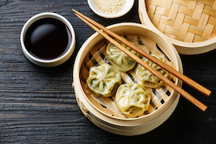
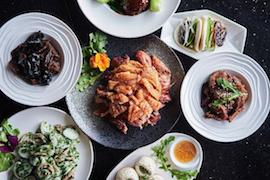
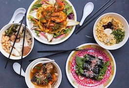
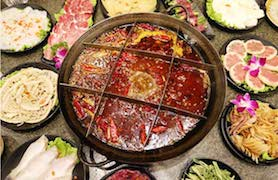
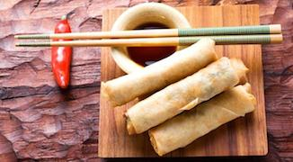
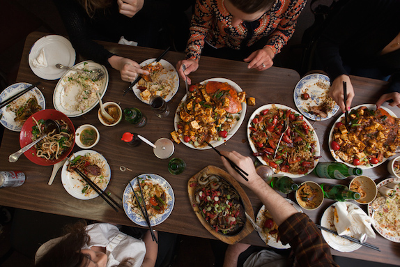
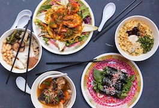
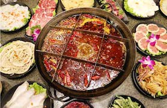
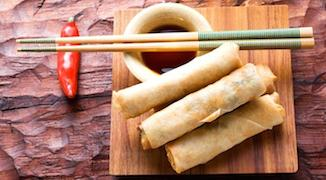
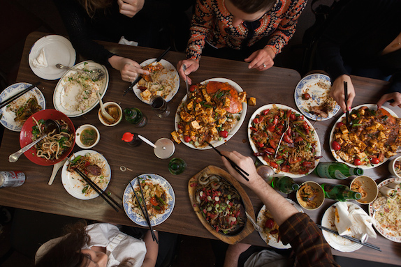

Chinese food and drink attach a special meaning towards the Chinese people. They have a common saying: “The masses regard food as their heaven”, which means that food is people's primal want. Eating does not just mean to fill the stomach. Having food at one's disposal, being able to consume a good amount of food, and knowing what and how to eat are all viewed as a good fortune. The Chinese Philosopher Lao Tzu once said: "Governing a great nation is much like cooking a small fish." He meant that governing a country required just the right seasonings and adjustments for successful results. This metaphor clearly illustrates the significance of food in Chinese culture.
  







A meal in Chinese culture is typically seen as consisting of two general components. One is main food --- a carbohydrate source or starch, typically rice (predominant in southern parts of China), noodles, or buns (predominant in northern parts of China). The other one is accompanying dishes, such as vegetables, fish, meat or other items. This is different from Western meals which meat or animal protein is often considered as the main dish. In fact, it is a harmony among grain, vegetable and meat. Chinese foods pay much attention on perfect harmony with the color, aroma, taste and shape, which share equal importance in the preparation of each dish, thereby, satisfying the gustatory, olfactory, and visual senses. A good dish itself is a work of art which can be attractive to every sensory organ of people. - All content from site are from Wikipidia and pictures are from google.